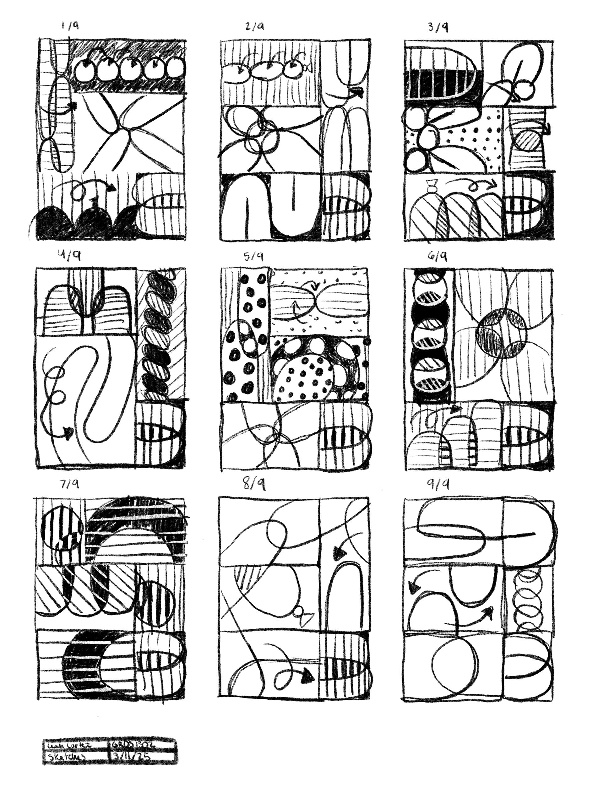

Sketch placeholder
Add concept sketches, thumbnails, or iteration sheets here.
Case Study · Design · 2025
Design a how-to book cover that communicates its subject matter using the formal design principles it teaches. The challenge was to convey clarity, structure, and instruction while appealing to modern design students through a culturally inclusive and conceptually rich visual language.


Add concept sketches, thumbnails, or iteration sheets here.
Add studio, making-of, or work-in-progress images here.
Add presentation mockups, close-ups, or alternate views here.
Using a 3x3 grid system, I created a composition that mirrors the structure of vintage instructional manuals, with geometric forms and typographic manipulation that emphasize visual hierarchy, contrast, rhythm, and balance. The goal was to visualize the very design principles discussed in the book, while introducing elements inspired by non-Western cultural aesthetics and playful material references.
Principle Analysis: Identified which design principles would be most effective for educational clarity, while mapping how those concepts could be emphasized visually (hierarchy, direction, layering).
Conceptual Development: Explored different approaches to using form, type, and layout to mirror clarity while referencing physical balloon twisting. Translucent forms and structural cropping were used to build a bold, breathable composition.
Cultural Integration: Incorporated stylistic references to inflated sculptures and airiness through form choice, echoing balloon aesthetics. Layering, transparency, and directional arrows guide the viewer through the grid while implying dimensional movement.
A textbook cover that teaches while it attracts. The design emphasizes a bold instructional grid, combines typographic structure with playful geometric abstraction, and uses cultural form metaphors (balloons, air, twist) without becoming literal. The hierarchical typography creates clear flow and functional contrast, while balloon forms suggest air and play through abstracted inflated curves and translucent layers.
This cover reframes traditional graphic design education by highlighting global design influences and proving that pedagogy can be both educational and stylistically bold.